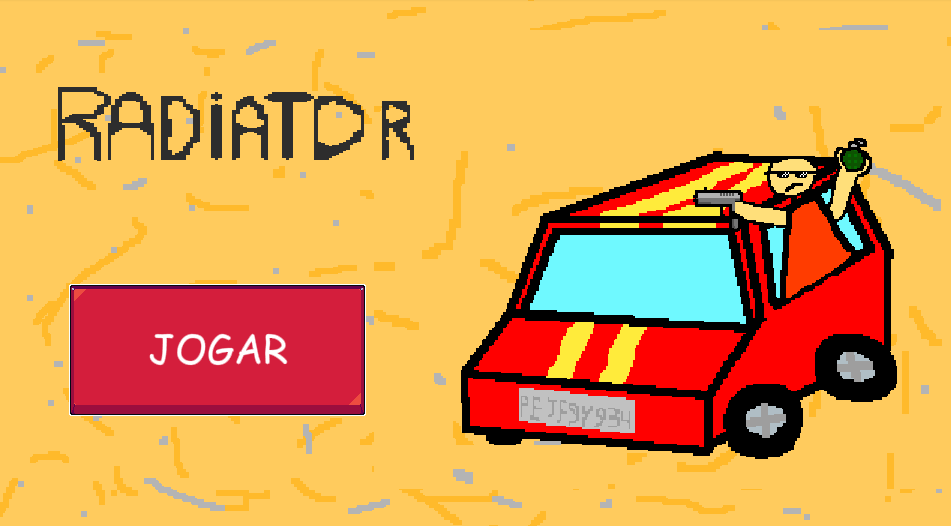
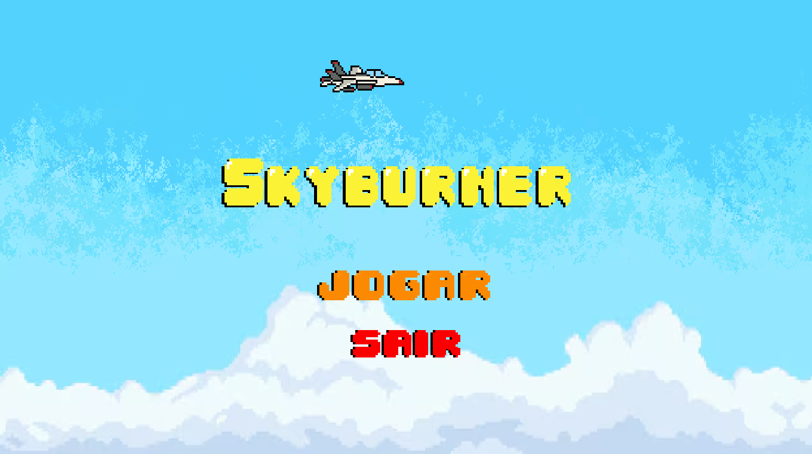
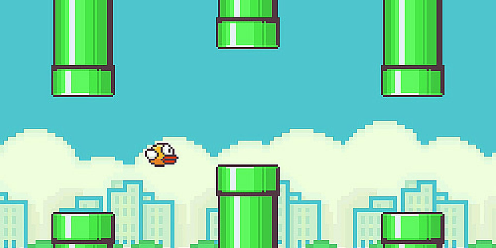
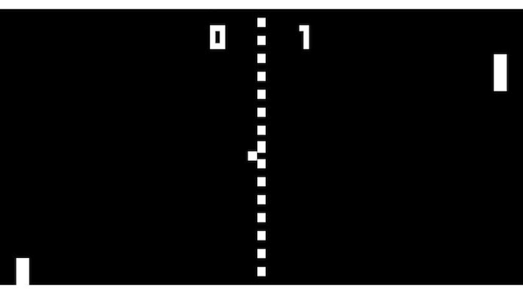
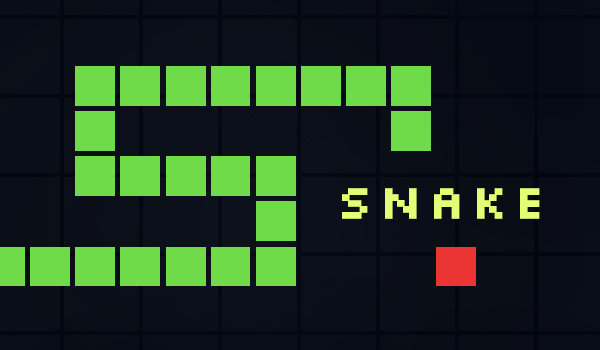
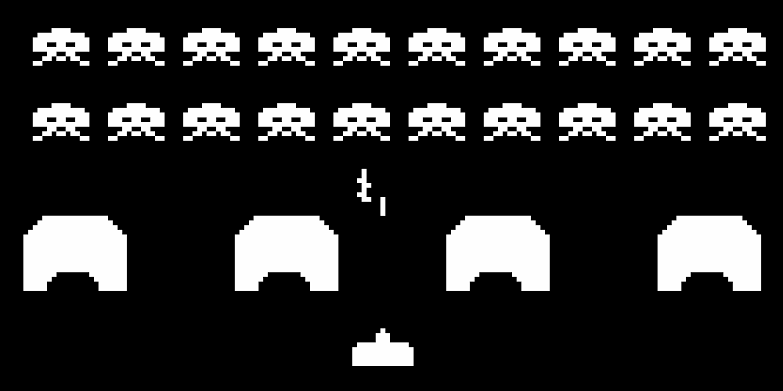
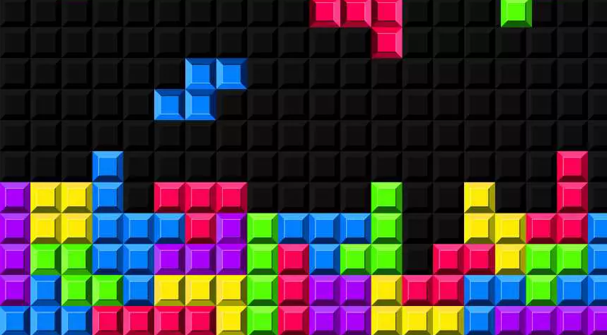

Projetos Autorais

Radiator
CONCLUÍDO
Tecnologias Utilizadas: Game Maker, Aseprite.

Sky Burner
CONCLUÍDO
Tecnologias Utilizadas: Game Maker, Aseprite, Cap Cut.
Olive Delights
EM DESENVOLVIMENTO
Tecnologias Utilizadas até o Momento: Game Maker, Aseprite.
Testosterone: The Game
EM DESENVOLVIMENTO
Tecnologias Utilizadas até o Momento: Game Maker, Aseprite.
Crash.Inc
EM DESENVOLVIMENTO
Tecnologias Utilizadas até o Momento: Game Maker, Aseprite.
Projetos Clone

Flappy Bird
CONCLUÍDO
Tecnologias Utilizadas: Game Maker, Aseprite.

Pong
CONCLUÍDO
Tecnologias Utilizadas: Game Maker, Aseprite.

Snake Game
CONCLUÍDO
Tecnologias Utilizadas: Python, VScode, Aseprite.

Space Invaders
CONCLUÍDO
Tecnologias Utilizadas: Game Maker, Aseprite.

Tetris
EM DESENVOLVIMENTO
Tecnologias Utilizadas: Game Maker, Aseprite.